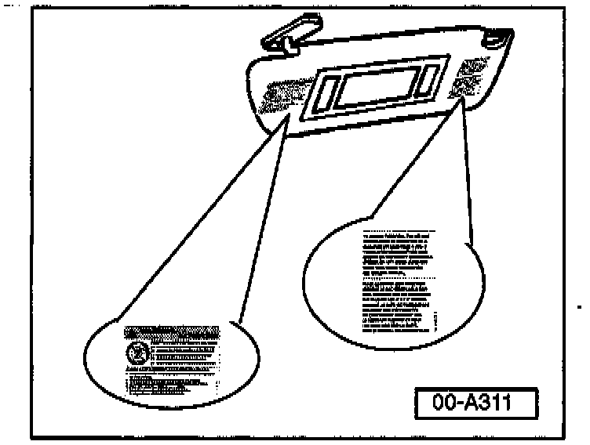
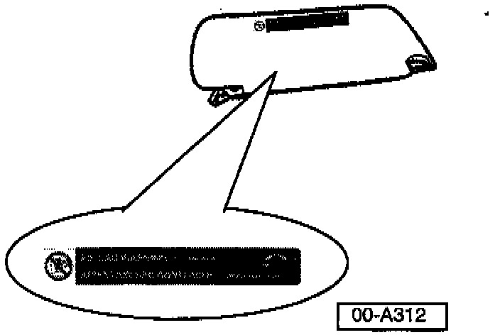

Airbag Warning Labels - New
Group: 00Number: 97-02
Date: Mar. 12, 1997
Subject:
NEW Airbag WARNING! Labels
Models:
All USA 1997 -->
Production
Beginning Feb. 25, 1997 production ALL vehicles will be equipped with NEW Airbag WARNING! labels.
All port facilities will assure that the labels are installed on the vehicles prior to shipment to the Dealer.
Label Location
WARNING!
Installation of Airbag WARNING! labels is mandated by the Federal government to warn drivers and occupants of possible danger!
Labels may NOT be removed except as noted!
Fines may be assessed on non complying vehicles

New labels are located on either side of sunvisor mirror (sunvisor flipped down) as shown.

A new label is located on sunvisor (sunvisor flipped up) as shown.
Note:
Sunvisors ordered through the Parts System will have labels installed.

A new WARNING! label is attached inside at the center of windshield with the bottom edge of the label resting on the dash.
Note:
This WARNING! label must also be in place when vehicle is delivered to the customer. ONLY THE CUSTOMER MAY REMOVE IT!
Additional quantities of this label may be ordered using Part No: 7D0 010 229J.
CAUTION!
Part numbers are for reference only. Always check with your Parts Dept. for the latest parts information.
Service
Prior to delivery to customer, assure that all Airbag WARNING! labels are in place.